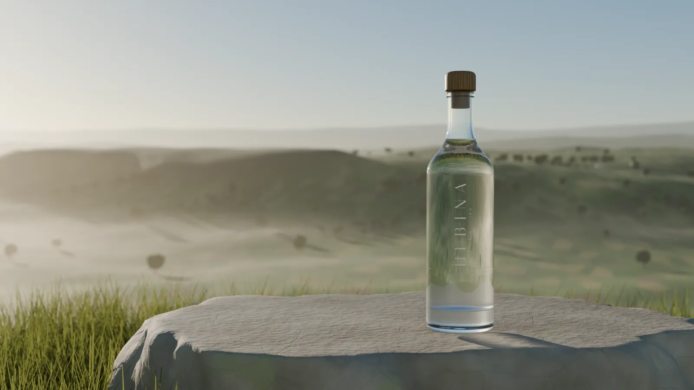
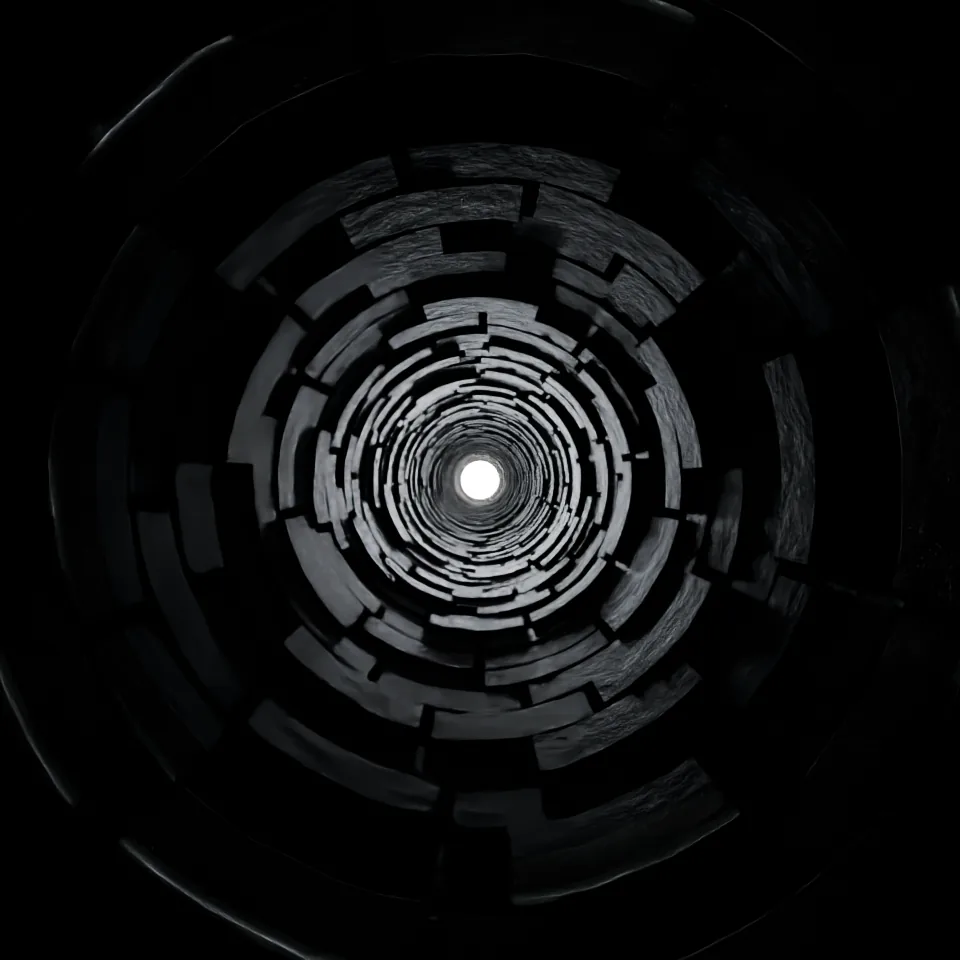
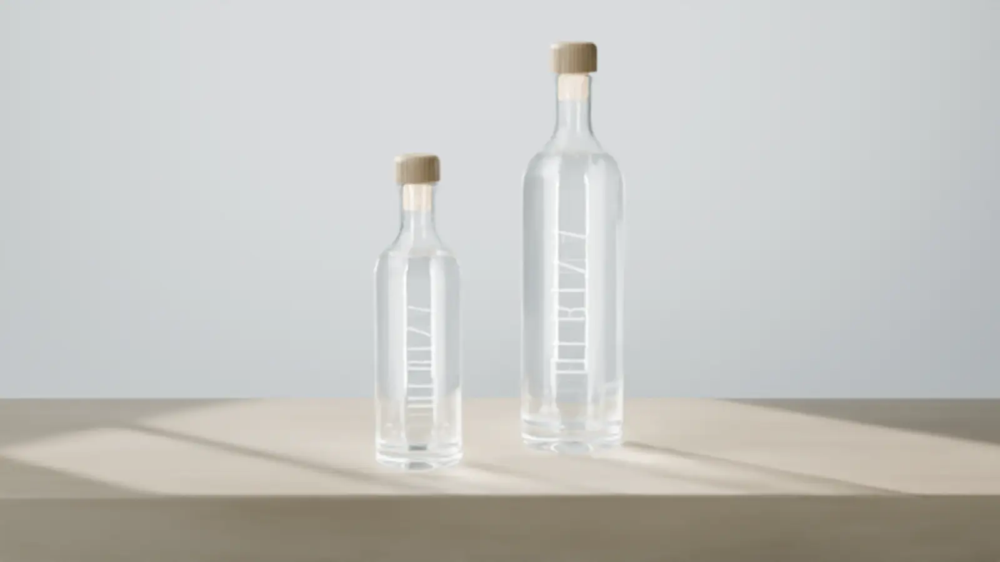
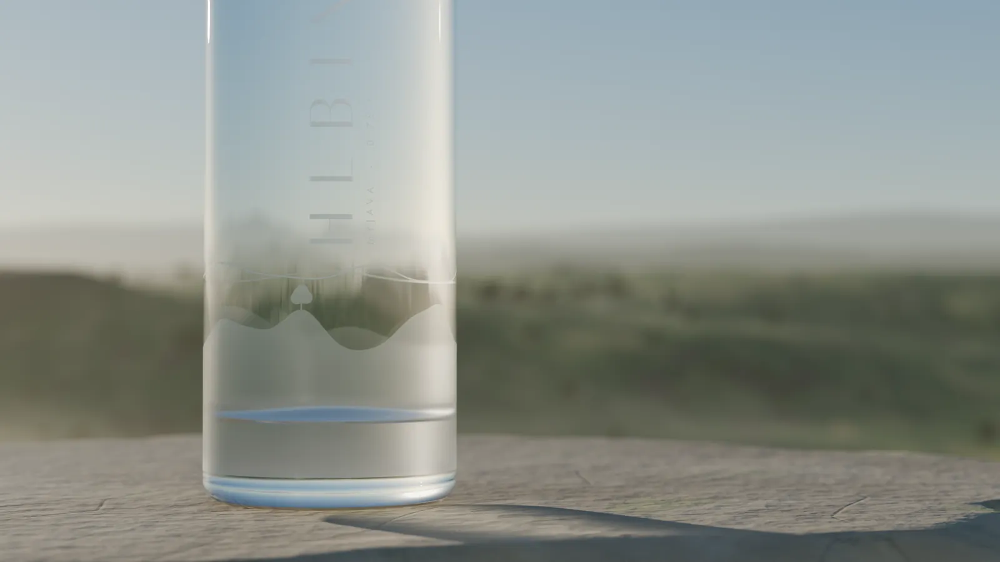
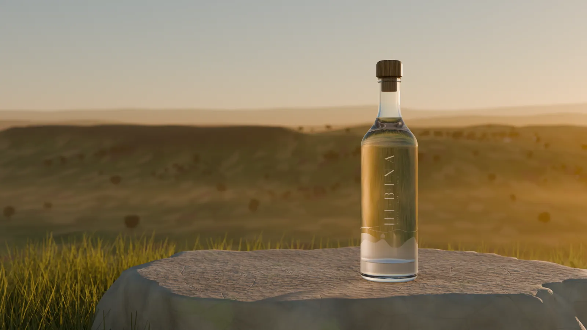

0,75 l
Na stôl pre dvoch až štyroch. Fľaša, ktorá vydrží celú večeru.
- Výška
- 28,2 cm
- Priemer
- 8,0 cm

Pramenitá voda zo studne v kopcoch nad Myjavou. Dlho čakala v tme pod zemou, plníme ju do skla priamo pri studni.
Studňa na kopaniciach nad Myjavou, kváder po kvádri.
Čím hlbšie, tým väčšie ticho.
Voda sem presakuje pomaly, cez piesok a štrk.
Trinásť metrov pod zemou.

Len voda, kameň a čas. Bez bubliniek, bez minerálov navyše, bez úpravy chémiou.
Potom ju vynesieme na svetlo.
Fľaše

Na stôl pre dvoch až štyroch. Fľaša, ktorá vydrží celú večeru.
Pre jedného. K obedu, na poradu alebo do tašky.

Bez etikety
Dole okolo fľaše obrys Myjavskej pahorkatiny, nad ním meno. Žiadny papier ani lepidlo. Uzáver je z dubového dreva s korkovou vložkou. Prázdnu fľašu nám vrátite, umyjeme ju a naplníme znova.

Pre reštaurácie a hotely
Podnikom vozíme vratné fľaše raz do týždňa. Hosť dostane vodu v skle, vám neostane žiadny plast.
Objednať
Napíšte, koľko fliaš chcete a kam. Ozveme sa s cenou a termínom rozvozu.